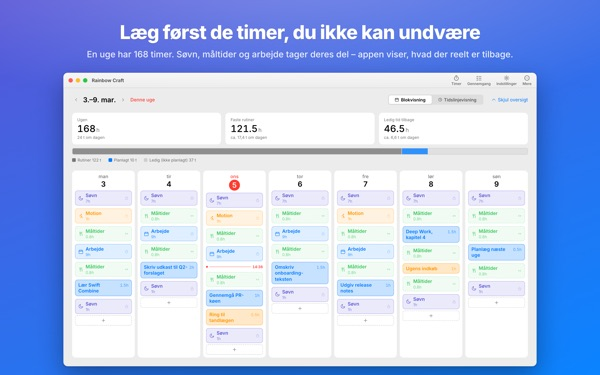
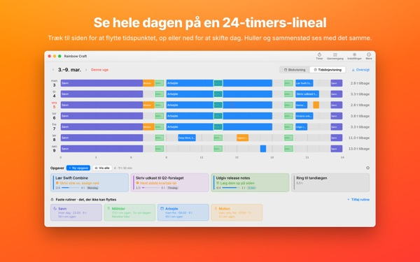
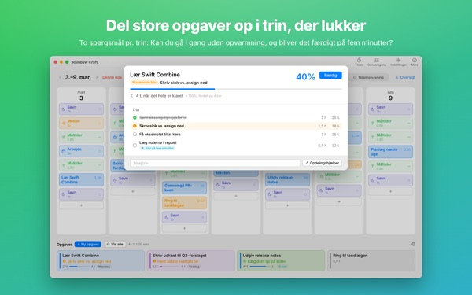
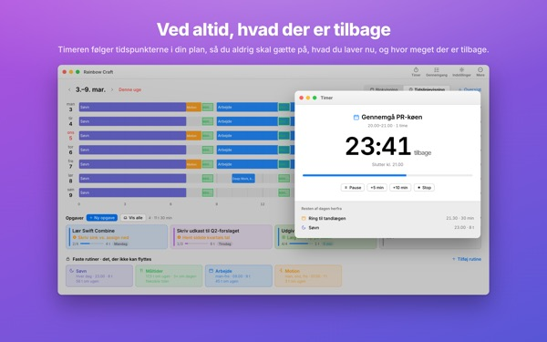
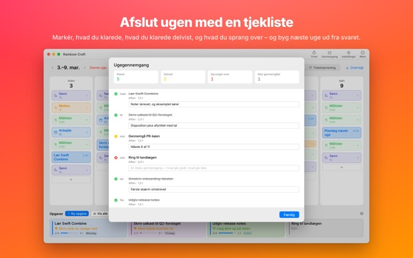

Kan det hele virkelig
nås i denne uge?
Rainbow Craft lægger din uge ud på Mac’en dag for dag og time for time. Start med den tid, du ikke kan give slip på, som søvn, måltider og arbejde, træk opgaverne ind i hullerne og se, hvad der faktisk kan være der.
Planlægning, rutiner, opgaver, gennemgang, timer og kalenderimport er gratis.

Planlæg en uge her
Vi har lagt de fire rutiner ind, som appen foreslår første gang, du åbner den. Slå dem til og fra, og læg opgaver på dagene.
Listen vokser. Ugen gør ikke.
En opgaveliste fortæller ikke, om din uge kan rumme den. Når søvn, mad og transport har taget deres del, er der mindre tilbage, end du tror. Rainbow Craft viser de timer som tal og felter og lader dig prøve hver opgave af på en rigtig plads.
Se en dag på en 24-timers lineal
Tidslinjevisningen lægger dagen ud på en lineal over 24 timer. Huller og overlap springer i øjnene, og du vælger, hvordan overlappende aftaler placeres.
Hent møder og aftaler fra Kalender på Mac’en i stedet for at skrive dem to gange. Hvis du vil, kan planerne også ryge i en separat Rainbow Craft-kalender, som du ser på iPhonen. Dine andre kalendere bliver aldrig ændret.

Del store opgaver op i trin, der bliver færdige
Store opgaver går i stå, når noget stadig står i vejen. Appen stiller to spørgsmål til hvert trin: Kan du gå i gang uden opvarmning? Kan det klares på fem minutter?
Det, der består begge, er en stump, du kan tage, når der opstår fem ledige minutter. Resten kræver afsat tid. Tager appen fejl, bestemmer du.

Hvad du er i gang med, og hvor længe endnu
Når starttiden kommer, skifter planen til i gang, og når tiden er gået, spørger appen, om du blev færdig. Timeren følger din plan.
Widgetten Nu-timer viser, hvad du laver, og hvor meget tid der er tilbage, uden at du åbner appen.

Luk ugen med en tjekliste
Ugegennemgangen er ét kort pr. dag. Markér, hvad du nåede, halvt nåede eller sprang over, og brug det til at planlægge næste uge.
Med samme iCloud-konto går opgaverne frem og tilbage mellem denne app og Rainbow of Desire på iPhone, så dagen, du planlagde på Mac’en, er med dig ude.

Kom i gang i tre trin
- 1
Læg de faste timer ind
Det, der kommer igen hver uge, som søvn, måltider og arbejde, bliver til rutiner. Appen udfylder intet for dig.
- 2
Skriv dine opgaver
Én pr. linje under Opgaver nederst. Hvornår du gør dem, behøver du ikke vide endnu.
- 3
Træk dem hen på dagene
Lagt på en dag bliver det en plan. Rykker datoen? Træk den til en anden dag eller tilbage på listen.
Regnestykket med de foreslåede rutiner
- En uge
- 168 timer
- Søvn · 8 timer om dagen
- 56 timer
- Måltider · tre om dagen
- 17,5 timer
- Arbejde · skole · 9 timer på hverdage
- 45 timer
- Motion · 1 time man, ons, fre
- 3 timer
- Tid, du reelt har i denne uge
- 46,5 timer
Det er kun forslag. Vælg og tilpas rutinerne til dit liv. På ferie- eller rejsedage fjerner du blot arbejdet fra netop den dag.
Alt, du behøver for at leve denne uge, er gratis
Gratis
- Uge- og dagsplaner, rutiner og opgaver uden grænse
- Tidslinjevisning og opdeling i trin
- Ugegennemgang, som også kan kopieres som tekst
- Timer og Nu-timer-widget
- Kalenderimport
- Synkronisering med Rainbow of Desire på iPhone
- Tendenser for de seneste 2 uger
Plus · Pro
- Plus: tendenser over 8 uger, dine bedste dage og tidspunkter
- Plus: plan og virkelighed side om side
- Plus: læg planen fra en god uge ind i denne uge på én gang
- Pro: alt i Plus og deling af din plan via et skrivebeskyttet link
- Pro: ét køb låser også Pro op i iPhone-appen
Hvert niveau som årsabonnement eller ét køb for altid
Priserne står i appen og i App Store. Årsabonnementet fornyes automatisk, medmindre du opsiger det senest 24 timer før periodens udløb. Pro købt på iPhone gælder også på en Mac med samme iCloud-konto.
Ofte stillede spørgsmål
Skal jeg være logget ind på iCloud?
Ikke hvis du kun bruger den på Mac’en. Det kræves for at synkronisere med iPhonen og dele din plan.
Ændrer appen mine kalendere?
Aldrig dem, du allerede har. Importen læser kun de kalendere, du vælger. Slår du skrivning til Rainbow Craft-kalenderen til, opretter appen den separate kalender og skriver kun dér. Du kan til enhver tid slette den i appen Kalender.
Opgaver fra Mac’en dukker ikke op på iPhonen.
Tjek, at begge enheder bruger samme iCloud-konto, og at Rainbow of Desire er installeret på iPhonen. Synkroniseringen går via iCloud og kan tage et par minutter.
Lukker appen, når jeg lukker vinduet?
Nej. Appen kører videre. Åbn vinduet igen fra menuen Vindue eller ved at klikke på ikonet i Dock.
Hvad sker der med mine opgaver og planer ved en opdatering?
De bliver præcis, som de er. Opdateringer ændrer eller sletter ikke noget, du har skrevet.
Hvordan skifter jeg appens sprog?
Vælg det øverst i Indstillinger under Language · 언어 · 語言, så åbner appen igen på det sprog. Der er 23 sprog. Rutinenavne og opgaver, du selv har skrevet, oversættes ikke.
Ny Mac, og Plus eller Pro er væk.
Log ind med samme Apple-konto, og klik på Gendan køb i Indstillinger. Opsigelse sker i dine kontoindstillinger i App Store.
Hvor gemmes det, jeg skriver?
Ingen konto, ingen tilmelding og ingen udviklerserver med dine planer. Det, du skriver, bliver på dine enheder og i din egen iCloud. Appen sender anonym brugsstatistik uden dit indhold, og du kan slå det fra i Indstillinger under Send anonym brugsstatistik.
Sidder du fast, eller er der noget galt? Skriv til mizzking75@gmail.com. Du kan også kontakte os fra appens indstillinger.